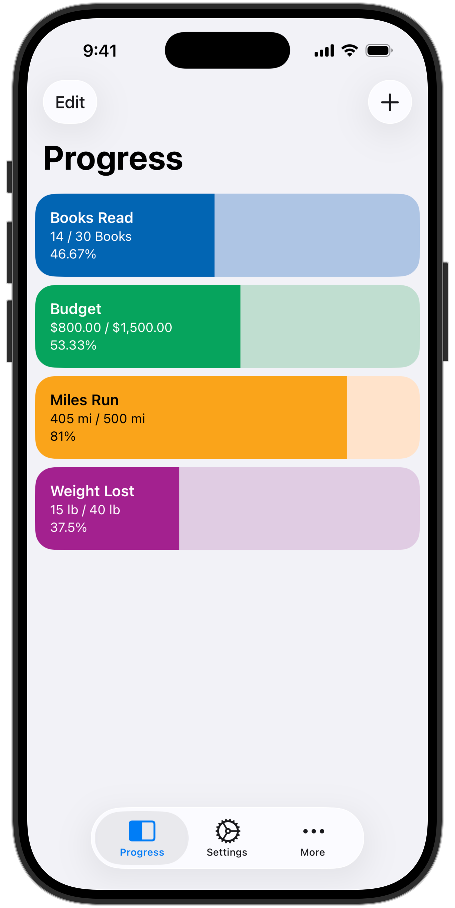

Project Description
The Task Progress Tracker is a conceptual productivity application designed to help users manage daily responsibilities through a simple and intuitive checklist system. The application emphasizes short-term task tracking by automatically resetting progress each day to promote consistency and habit formation.
Skills Learned
- Conceptual application design and feature planning
- User experience considerations for productivity tools
- Logical task scheduling and state management concepts
- Semantic HTML structure for content organizations